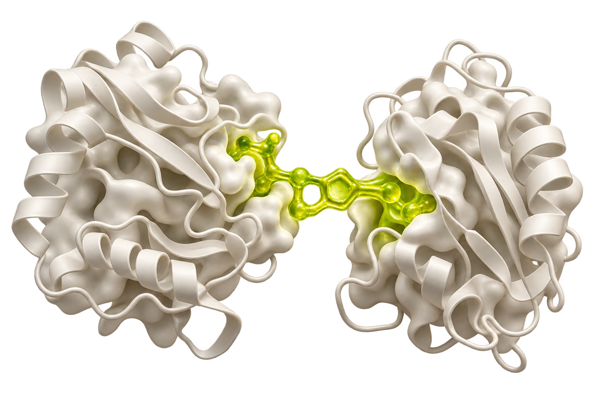

Design the library
Build chemical diversity around a defined discovery question. DNA tags connect each compound to its identity.

We bring proteins together.
And the people discovering
what comes next.
Between a protein and its degrader.
Between an experiment and an insight.
Between one researcher and another.
GlueTec builds the technology that makes these connections possible. Our work spans molecular glue drug discovery and the software that helps research move forward.
What if we could bring a disease-driving protein to the machinery that removes it?
That is the idea behind molecular glue degraders. GlueTec combines chemically induced proximity with DNA-encoded libraries to search for small molecules that bring a target protein and a degradation effector together.
Our focus is on identifying productive interactions, then testing whether they translate into protein degradation.
Meet the discovery platformStart with a target protein and an effector that could support its degradation.
Conceptual illustration. Successful proximity requires experimental validation.
DNA-encoded libraries meet functional screening.
Build chemical diversity around a defined discovery question. DNA tags connect each compound to its identity.
Explore compounds that bring the target and effector together, with a focus on productive interactions.
Move from a screening signal to follow-up experiments that examine degradation and cellular activity.
Selected research cited in GlueTec’s ideation deck. Preprints have not completed peer review.
2025 / bioRxiv preprintDiscovery of a VHL molecular glue degrader of GEMIN3 by Picowell RNA-seq2024 / ChemRxiv preprintSelection of DNA-encoded Chemical Libraries for Compounds that can Induce Protein Ubiquitination2025 / Journal of the American Chemical SocietyIdentification of Actionable Targeted Protein Degradation Effector Sites through Site-Specific Ligand Incorporation-Induced Proximity (SLIP)The next connection
is between researchers.
LAB OS is our research workspace in development. It links projects, molecules, experiments, and datasets so that the work behind an insight stays together.
From a DNA sequence to a protein, from a protocol to its results: a connected record of how research happens.
Discuss a LAB OS pilotGive each research question a home, with the molecules, experiments, and results that belong to it.
A shared question. A connected record of the work.
Work with DNA and protein records, annotations, and linked constructs within the same project.
ATG GCT GAA TGC AAG GGT
ACC TTC GAT GAA CCT TAAFollow the relationship from sequence to experiment.
Connect protocol runs and calculations to experiment records, then link the resulting datasets.
Bring quantitative datasets and image analysis back to the work that produced them.
Import and link tabular measurements.
Keep source images alongside analysis recipes.
Illustrative records. No experimental results shown.
An interactive introduction to LAB OS.
Product development is ongoing.
Built around research continuity,
from the bench to the next researcher.
We are building a company around both scientific discovery and the tools that sustain it.
Develop candidates aimed at disease-driving proteins, with oncology as an initial focus.
Long-term therapeutic developmentWork with pharmaceutical companies and research institutes on DNA-encoded library and molecular glue screening.
Research partnerships & platform servicesA connected workspace for researchers and laboratories, designed to support the work of discovery every day.
Planned software subscriptionsChemistry, biology, and a shared belief in what connection makes possible.
MSci in Chemistry, Imperial College London
Joint PhD candidate, HKU and Imperial
PhD in Chemical Biology and Medicinal Chemistry
Senior Research Officer, LSCCB
MSci in Biochemistry and Molecular Biology
PhD candidate in Molecular Biology, HKU
PhD candidate in Chemical Biology, HKU
Former CSO, MUTO World
Explore a screening collaboration.
Discuss a LAB OS pilot.
Start a conversation with GlueTec.